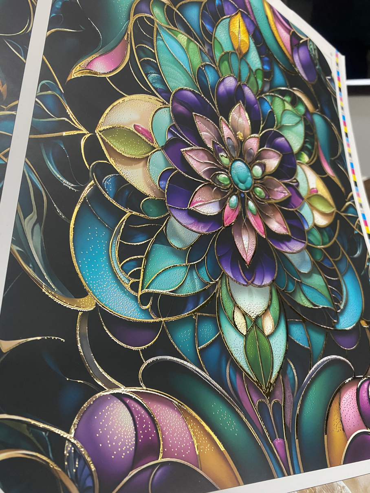
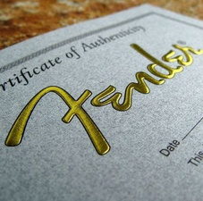
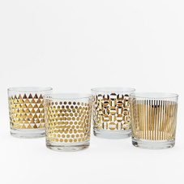

The i-Foil Online is a foil-application system that attaches to an automatic screen press — combining automatic screen printing, a hybrid UV-LED dryer and a foiling section. Foil adheres to cured UV glue for flat, tactile or 3D effects, plus Spot UV and Cast & Cure — no dies, minimal foil waste, single operator.
 i-Foil Online · inline foiling
i-Foil Online · inline foilingWhere the i-Foil Online earns its place on the floor — the work it runs every day.
Four stages — the AS-IFO process in short.
UV glue is screen-printed to the artwork on the automatic press.
Hybrid UV-LED dryer with industrial chiller cures the glue (lamp life ~20,000 h).
Foiling section transfers foil to the cured glue — foil-saver minimises waste.
EPS UV lamp delivers Spot UV and high-gloss Cast & Cure effects.
Indicative figures — exact configuration, sheet size and speed are quoted to your requirement.
Real samples produced on Indiacot machines.



Send us your substrate, sheet size and the finish you're after — we'll come back with a configuration and price. Built in Rajkot, supported wherever you run it.
Mon–Sat · Replies within a business day